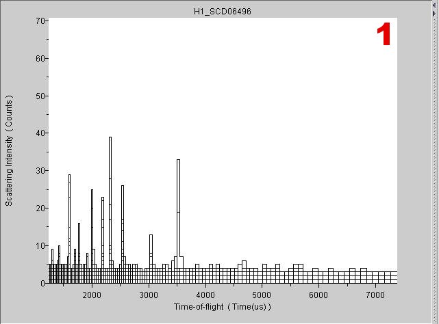

Selected Graph View
Contents |
Introduction:
The ISAW Selected Graph View allows users to view a graph containing time of flight data and its associated counts for user-selected data blocks.
Getting Started:
Launching Selected Graph View
Before launching the selected graph view, there must be data loaded in the tree.
Click on the DataSet of interest and then follow the menus:
View > Selected Graph View

Viewer Window:
1 Line Graph Display
This graph displays the selected spectra as line graphs with the scattering intensities as the dependent variable and the user-defined x value as the independent variable. The default x value is Time-of-Flight.
Viewer Menus
File
Print – This option prints the visible portion of the viewer window as it appears on the screen.
Save Image – Select this option to save the visible portion of the viewer window as a JPEG picture file.
Save As New DataSet – Select this option to save the current view as a new DataSet. The new DataSet will appear in the tree under “Modified.”
Save Object State – This option is used to save the current object state as an ISV state file.
Load Object State – This option is used to load a saved object state file.
Close Viewer – This option closes the selected graph view window.
Edit
Sum – This option is used to sum all counts of either the selected or unselected spectra.
Delete – This option is used to delete all counts of either the selected or unselected spectra.
Clear – Use this option to clear all select flags.
Sort by – This option is used to sort the graph data.
View
Additional View – This option creates a duplicate selected graph view window. This new window can then be changed to a different view type.
Image View – This option changes the current window to an image view window.
3D View – This option changes the current window to a 3D view window.
HKL Slice View – This option changes the current window to a HKL Slice view window.
Contour View – This option changes the current window to a Contour view window.
Scrolled Graph View - This option changes the current window to a Scrolled Graph view window.
Selected Graph View - This option changes the current window to a Selected Graph view window.
Selected Table View – This option changes the current window to a Selected Table View window.
Table Generator – This option changes the current window to a Table Generator window.
Axis Conversions – This option converts the independent variable to another type of measurement.
Options
Function Controls – Select this option to open a new window containing several controls for adjusting the graph’s appearance.
Line Selected – This allows the user to select a Group ID to modify.
Line Style – Use this menu to change the line style for the currently selected Group ID.
Line Width – Use this menu to change the line width for the currently selected Group ID.
Line Color – Press this button to choose the line color for the currently selected Group ID.
Point Marker – Use this menu to specify a point marker for the currently selected Group ID.
Point Marker Size – Use this menu to change the size of the point marker for the currently selected Group ID.
Point Marker Color – Press this button to choose the point marker color for the currently selected Group ID.
Error Bars – Use this menu to show error bars for the currently selected Group ID.
Error Bar Color – Press this button to choose the error bar color for the currently selected Group ID.
Shift – Use this menu to specify a shift for the entire graph.
Shift Factors – Use this menu to select a shift factor to be applied to the entire graph.
Axis Overlay – Check this box to add an axis overlay to the current graph. Click the edit button to change the overlay’s appearance.
Annotation Overlay – Check this box to add an annotation overlay to the current graph. Click the edit button to change the overlay’s appearance.
Legend Overlay – Check this box to add a legend to the current graph. Click the edit button to change the overlay’s appearance.
Scale – Use these text fields to edit the X and Y range for the current graph.
Cursor – This readout displays the current XY coordinates of the cursor.
Logarithmic Axis – Use this menu to specify a logarithmic scale for the X and Y axis.
Show Pointed At – Select this option to show currently pointed at data block in a linked view.
Link Views – Select this option to link the current view with any additional views of the same data set that also have this option selected. This is on by default so that pointing the cursor in one view affects all views of the same data.